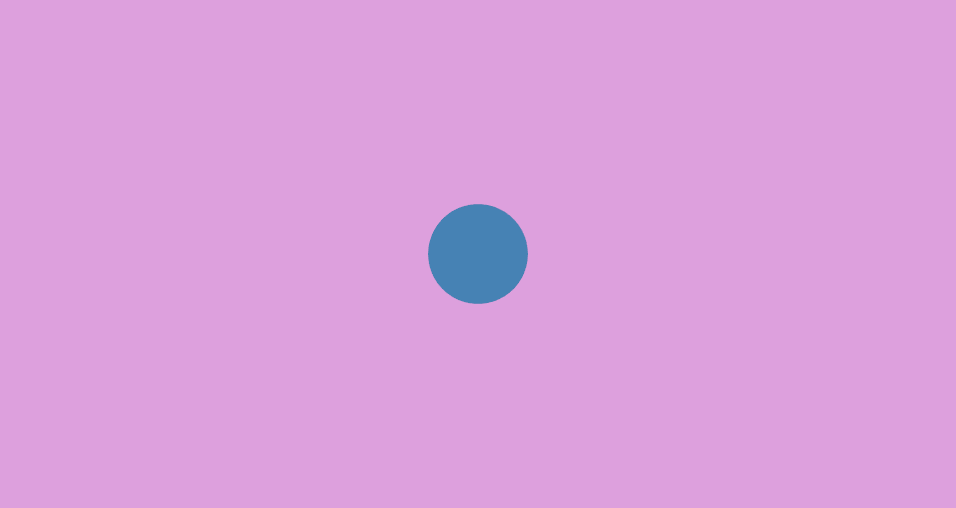
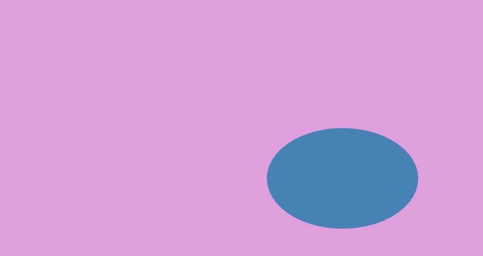
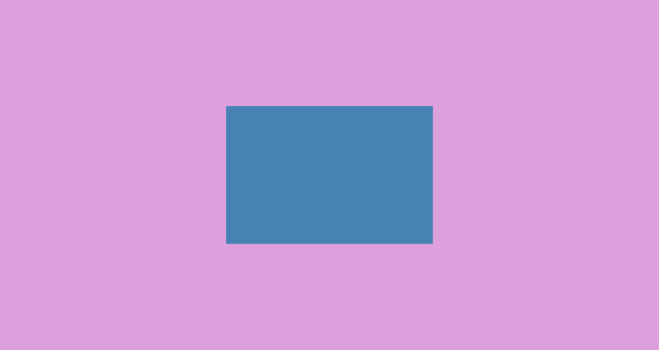
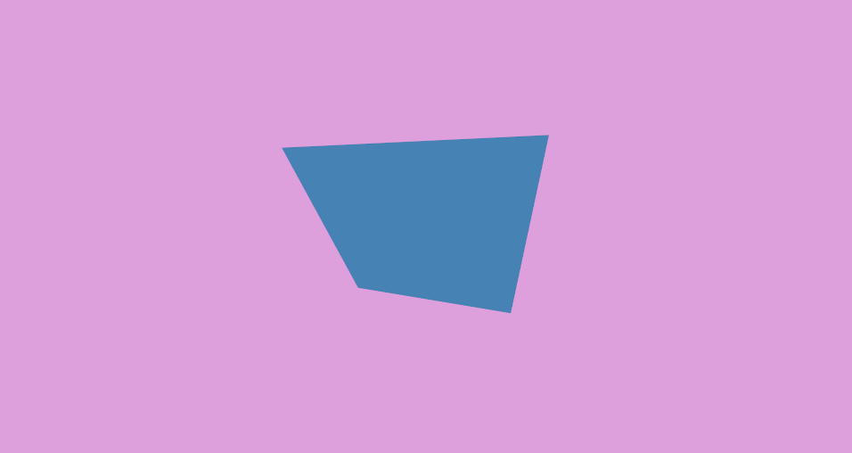
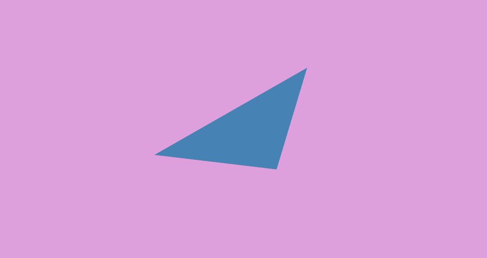
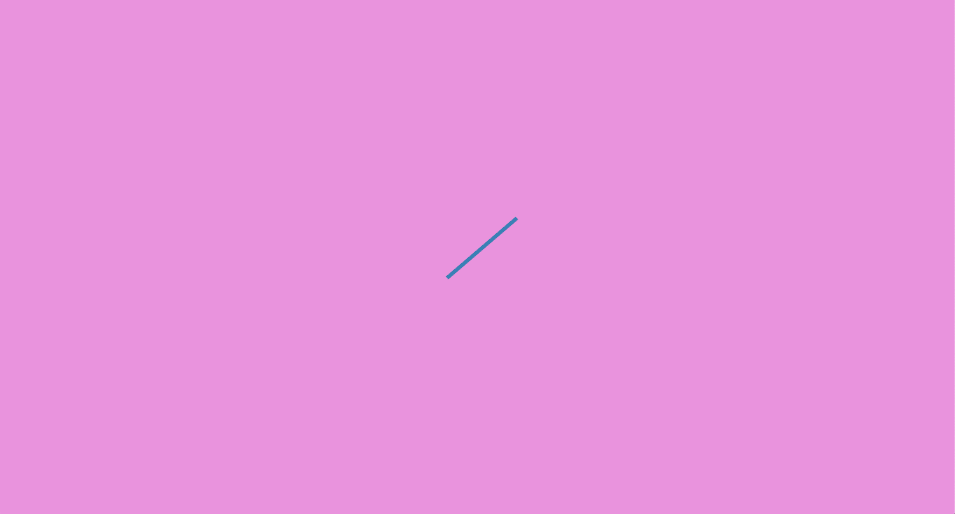
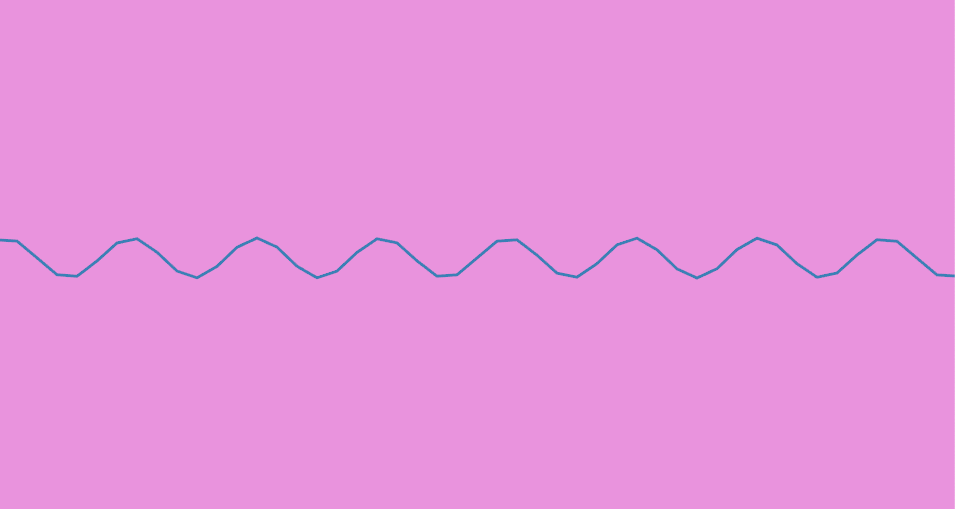
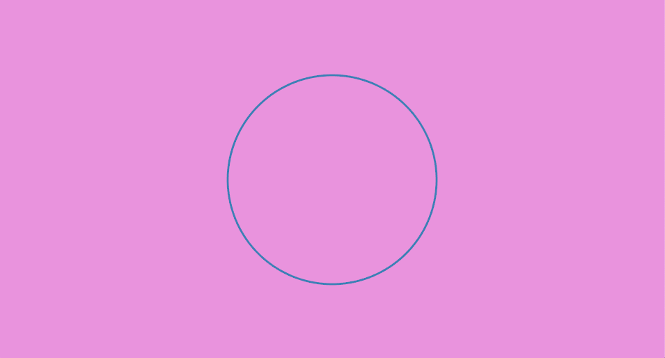
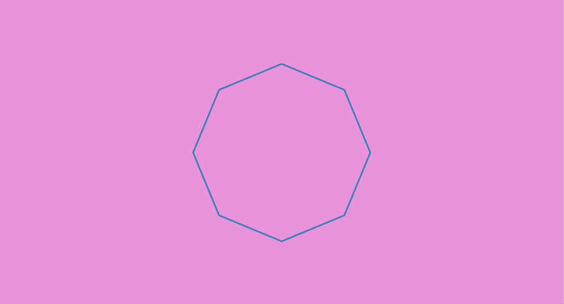
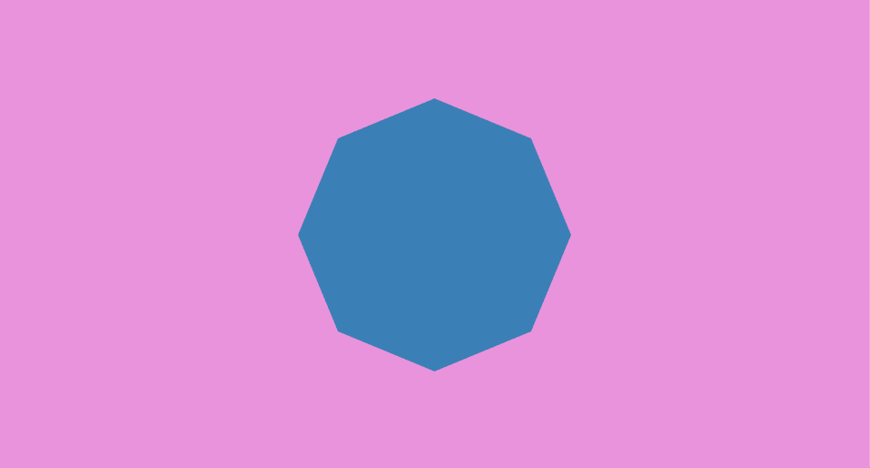

Drawing 2D Shapes
Tutorial Info
- Author: Seth Boyles
- Required Knowledge:
- Reading Time: 20 minutes
In this tutorial we explore drawing 2D shapes with nannou. We will cover drawing basic lines, simple polygons (e.g. ellipses, rectangles, etc.), and more complex polygons where you can create whatever shape you’d like!
To begin with, we will need a nannou project file to work with. Copy the following into new file:
use nannou::prelude::*;
fn main() {
nannou::sketch(view).run();
}
fn view(app: &App) {
// Prepare to draw.
let draw = app.draw();
// Clear the background to purple.
draw.background().color(PLUM);
// Draw a blue ellipse with default size and position.
draw.ellipse().color(STEEL_BLUE);
}You can also find this file, and other useful examples, in the examples directory of the nannou source repository.
Drawing Simple Shapes
Let’s try running the file! (if you haven’t already, you will need to add this file to your Cargo.toml file)
You should a new window with something that looks like this:

Already we are rendering a circle to our canvas. As you may have guessed, the line of code responsible for creating a circle is the call to the ellipse function:
#![allow(unreachable_code, unused_variables)]
use nannou::prelude::*;
fn main() {
let draw: Draw = unimplemented!();
draw.ellipse()
.color(STEEL_BLUE);
}There are many ways we can alter our circle here. Let’s start with changing the size:
#![allow(unreachable_code, unused_variables)]
use nannou::prelude::*;
fn main() {
let draw: Draw = unimplemented!();
draw.ellipse()
.color(STEEL_BLUE)
.w(300.0)
.h(200.0);
}The w function here changes the width of the ellipse to 300 pixels, and the h function changes the height to 200.0 pixels. You should see what we would more colloquially refer to as an ellipse.
We can also change the position of our ellipse with the x_y method:
#![allow(unreachable_code, unused_variables)]
use nannou::prelude::*;
fn main() {
let draw: Draw = unimplemented!();
draw.ellipse()
.color(STEEL_BLUE)
.w(300.0)
.h(200.0)
.x_y(200.0, -100.0);
}
As you can see, we edit our ellipse by chaining together different methods which will change one or more properties of our shape. This is called the Builder pattern. The call to draw.ellipse() returns an object of type Drawing<Ellipse>. In turn, each call to a builder method, such as w(300.0) or x_y(200.0, -100.0), returns the same instance of our shape. By chaining these function calls, we are able to build an ellipse with the attributes we want.
There are several more methods we can use to build our ellipse. You can view the documentation for many of these methods here.
Drawing Rectangles and Quadrilaterals
Drawing a square or rectangle uses the same builder pattern that drawing an ellipse does. In fact, it’s similar enough that you can swap out ellipse with rect in the example above to get a working example:
#![allow(unreachable_code, unused_variables)]
use nannou::prelude::*;
fn main() {
let draw: Draw = unimplemented!();
draw.rect()
.color(STEEL_BLUE)
.w(300.0)
.h(200.0);
}You will see an image like this:

In addition to rect, you can also use the quad method, which is for drawing quadrilaterals. This function is similar to rect, but you can also choose to supply your own coordinates for your shape. Try the following:
#![allow(unreachable_code, unused_variables)]
use nannou::prelude::*;
fn main() {
let draw: Draw = unimplemented!();
let point1 = pt2(-10.0, -20.0);
let point2 = pt2(10.0, -30.0);
let point3 = pt2(15.0, 40.0);
let point4 = pt2(-20.0, 35.0);
draw.quad()
.color(STEEL_BLUE)
.w(300.0)
.h(200.0)
.points(point1, point2, point3, point4);
}You should see the following:

The pt2 method above will create a point object that represents a point in XY coordinate space, like a graph or a Cartesian plane. nannou’s coordinate system places (0,0) at the center of the window. This is not like many other graphical creative coding frameworks, which place (0,0) at the upper-leftmost position of the window.
Note that while the Drawing builder objects for different shapes share many of the same builder methods, they do not share all of them. Trying to use the method points on an instance of an Drawing<Ellipse>, for example, will raise an error.
Drawing a Triangle
Additionally, there is one more simple shape method: tri, for drawing triangles. It behaves similarly to quad, where you can supply your own coordinates to decide how the shape looks. Try it out!

Drawing Lines
The line function provides a simple way to draw a line:
#![allow(unreachable_code, unused_variables)]
use nannou::prelude::*;
fn main() {
let draw: Draw = unimplemented!();
let start_point = pt2(-30.0, -20.0);
let end_point = pt2(40.0, 40.0);
draw.line()
.start(start_point)
.end(end_point)
.weight(4.0)
.color(STEEL_BLUE);
}
Simply provide a starting point and an ending point, and you have your line.
This is great for simpler drawings, but what if you want to draw something more complicated? A sine wave, for instance.
To draw our sine wave, we will use the polyline function. To use this function, we will supply a collection (or array) of points that represent points on a sine wave. We can generate this array of points using—what else—the sin function!
#![allow(unreachable_code, unused_variables)]
use nannou::prelude::*;
fn main() {
let draw: Draw = unimplemented!();
let points = (0..50).map(|i| {
let x = i as f32 - 25.0; //subtract 25 to center the sine wave
let point = pt2(x, x.sin()) * 20.0; //scale sine wave by 20.0
(point, STEEL_BLUE)
});
draw.polyline()
.weight(3.0)
.points_colored(points);
}
As you can see, the power of polyline is the ability to draw a series of lines
connecting and ordered array of points. With this, you can easily draw a
variety of shapes or lines, so long as you can provide or generate the points
you need to represent that shape.
For example, a circle:
#![allow(unreachable_code, unused_variables)]
use nannou::prelude::*;
fn main() {
let draw: Draw = unimplemented!();
// Store the radius of the circle we want to make.
let radius = 150.0;
// Map over an array of integers from 0 to 360 to represent the degrees in a circle.
let points = (0..=360).map(|i| {
// Convert each degree to radians.
let radian = deg_to_rad(i as f32);
// Get the sine of the radian to find the x co-ordinate of this point of the circle
// and multiply it by the radius.
let x = radian.sin() * radius;
// Do the same with cosine to find the y co-ordinate.
let y = radian.cos() * radius;
// Construct and return a point object with a color.
(pt2(x,y), STEEL_BLUE)
});
// Create a polyline builder. Hot-tip: polyline is short-hand for a path that is
// drawn via "stroke" tessellation rather than "fill" tessellation.
draw.polyline()
.weight(3.0)
.points_colored(points); // Submit our points.
}
A custom drawn circle! …okay, perhaps this isn’t too exciting, given that we
already have an easy way of drawing circles with ellipse. But with a simple
change to the above code we can generate an outline of a different shape. Let’s
try using the step_by function, which allows us to choose the interval at
which we would like to step through a range or other iterator. So instead of
calling (0..=360).map, we will call (0..=360).step_by(45).map:
#![allow(unused_variables)]
fn main() {
let points = (0..=360).step_by(45).map(|i| {
0.0
});
}The rest of our code will remain unchanged.
Because 45 divides into 360 eight times, our code generated 8 points to represent a regular octagon.

An octagon!
Try experimenting with different values to pass into step_by and see the
different shapes you can create!
As a side note, you may have noticed that we did not use a color function to
set the drawing’s color this time. Instead, polyline allows for each point to
be colored uniquely. This means that you can change the color of the polyline
point-by-point. Try experimenting with it!
Drawing Custom Polygons
To draw a custom filled-in polygon (and not just an outline), will we use code
very similar to our custom circle or octagon code. The main difference is that
instead of calling polyline to create a Builder, we call polygon:
#![allow(unreachable_code, unused_variables)]
use nannou::prelude::*;
fn main() {
let draw: Draw = unimplemented!();
let radius = 150.0;
let points = (0..=360).step_by(45).map(|i| {
let radian = deg_to_rad(i as f32);
let x = radian.sin() * radius;
let y = radian.cos() * radius;
(pt2(x,y), STEEL_BLUE)
});
draw.polygon()
.points_colored(points);
}
Concluding Remarks
In this tutorial, we learned about most basic 2D drawing functions with nannou.
You can view the documentation for the different Drawing objects these return
here:
These links provide more information about other functions you can use to change your drawings in a variety of ways.
You have now learned about some of the most commonly used functions for 2D drawing with nannou. Of course, this is just scratching the surface of ways in which you can generate shapes or polygons with nannou, but it should serve as a solid starting point in creating your own drawings.
Happy coding!